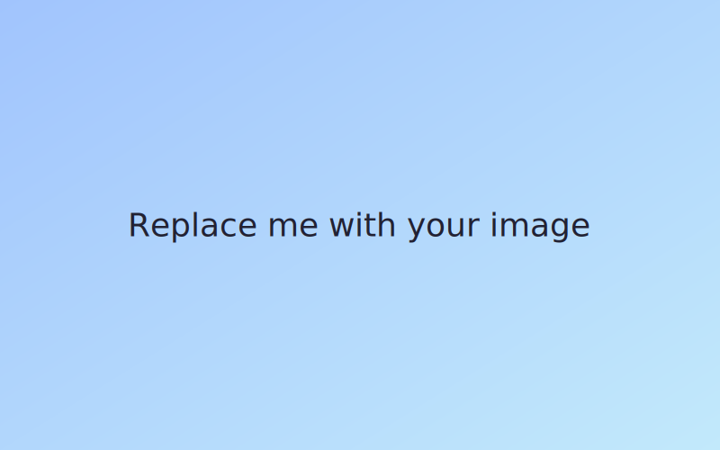

My Thesis Zine
Click or drag the corner to flip pages.
Built with the free StPageFlip library.
Video Page
Replace media/video.mp4 with your own file.
Audio + Image Page
Swap out media/audio.mp3 and media/image.svg.
Thanks for reading
Add more pages by duplicating these .page blocks.
Page 1